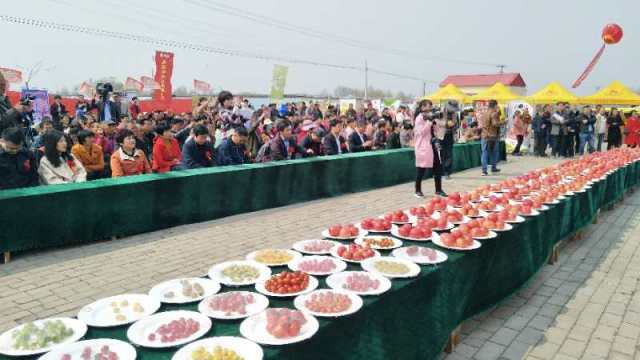
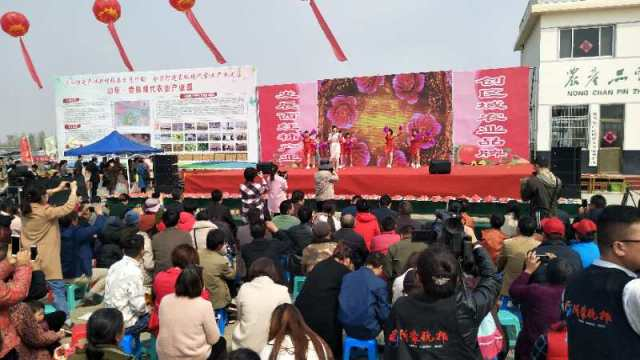
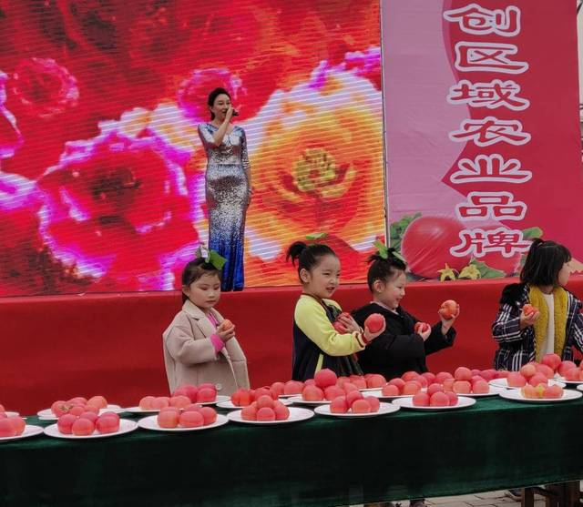

西红柿经济助力乡村振兴

实现农业农村现代化，关键在于实现信息化。

4月2日，“幸福映红新时代 筑梦奋进新征程”——山东省费县胡阳第八届西红柿节暨乡村振兴本土人才擂台赛在胡阳镇举行。本次西红柿节可谓精彩纷呈，胡阳镇党委、政府围绕“西红柿熟了”、“农民富了”和“文化艺术来到咱百姓的田间地头了”等三大板块，组织吃西红柿比赛、西红柿采摘、西红柿评比和摄影采风等活动。通过丰富多样的文艺节目为观众带来了一场视觉盛宴，以“讲、评、帮、乐、庆”的形式推动了新时代文明实践活动蓬勃开展。吸引了大批游客慕名前来采摘游玩。

春光明媚，丰收的西红柿不仅映红了时光，也映红了种植户的心田。近年来，胡阳镇依托全镇丰富的农业资源和区位优势，大力实施乡村振兴战略，加快发展特色休闲观光农业，按照蒙山前高效农业示范园区胡阳板块建设要求，设计以文东路为轴，打造中西部温室西红柿和东北部大棚瓜菜现代农业示范片区，建设高标准西红柿种植、瓜菜种植、连栋温室育苗工厂、采摘旅游和交易物流中心的“一轴两区五中心”发展目标。推动1200亩的吉山村现代农业示范基地建设。
目前，全镇集聚发展西红柿种植专业村30个，种植专业户6000余户，发展西红柿种植面积2.7万亩，年产量达27万吨，年产值达19.6亿元，人均年增收8000余元，现已成为鲁南地区最大的温室西红柿生产基地，与上海商务委合作建成上海外延蔬菜生产基地。该镇先后被评为全国青少年农业科普示范基地，全国一村一品示范镇。在中国农产品区域公用品牌价值评估中达到5.39亿元。获批创建省级现代农业示范园区，被评为全国兴村强县示范乡镇、临沂市农业新六产示范镇，“胡阳西红柿”品牌的影响力不断扩大。2019年通过北京丰景网签约北京市菜篮子工程生产基地，打通了农超对接的快车道。

双脚踏上幸福路，走过的是风雨，迎来的是一个美好的明天。2019年，胡阳镇将准确把握乡村振兴战略的部署要求，担当作为、狠抓落实，以省级现代农业示范园建设为核心，以兴村强县示范行动为引领，稳步推进吉山综合型现代农业示范基地和东部瓜菜产业园区建设，促进农业产业化步伐再加快、农村基础设施再提升、农民朋友群体收入再提高，努力实现品牌农业、绿色农业、精致农业、休闲农业、智慧农业全方位发展，为打造“通衢要津，航空小镇，美丽胡阳”，打造乡村振兴费县样板。（刘涛）


 意见反馈
意见反馈